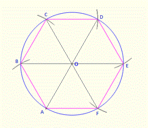

This page shows how to construct (draw) a regular hexagon inscribed in a circle with a compass and straightedge or ruler. This is the largest hexagon that will fit in the circle, with each vertex touching the circle. In a regular hexagon, the side length is equal to the distance from the center to a vertex, so we use this fact to set the compass to the proper side length, then step around the circle marking off the vertices.
The above animation is available as a printable step-by-step instruction sheet, which can be used for making handouts or when a computer is not available.
The image below is the final drawing from the above animation, but with the vertices labelled.

| Argument | Reason | |
|---|---|---|
| 1 | A,B,C,D,E,F all lie on the circle O | By construction. |
| 2 | AB = BC = CD = DE = EF | They were all drawn with the same compass width. |
| From (2) we see that five sides are equal in length, but the last side FA was not drawn with the compasses. It was the "left over" space as we stepped around the circle and stopped at F. So we have to prove it is congruent with the other five sides. | ||
| 3 | OAB is an equilateral triangle | AB was drawn with compass width set to OA, and OA = OB (both radii of the circle). |
| 4 | m∠AOB = 60° | All interior angles of an equilateral triangle are 60°. |
| 5 | m∠AOF = 60° | As in (4) m∠BOC, m∠COD, m∠DOE, m∠EOF are all &60deg; Since all the central angles add to 360°, m∠AOF = 360 - 5(60) |
| 6 | Triangle BOA, AOF are congruent | SAS See Test for congruence, side-angle-side. |
| 7 | AF = AB | CPCTC - Corresponding Parts of Congruent Triangles are Congruent |
| So now we have all the pieces to prove the construction | ||
| 8 | ABCDEF is a regular hexagon inscribed in the given circle |
|